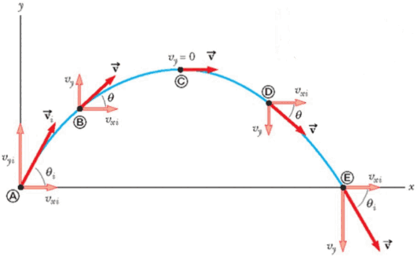
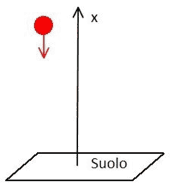
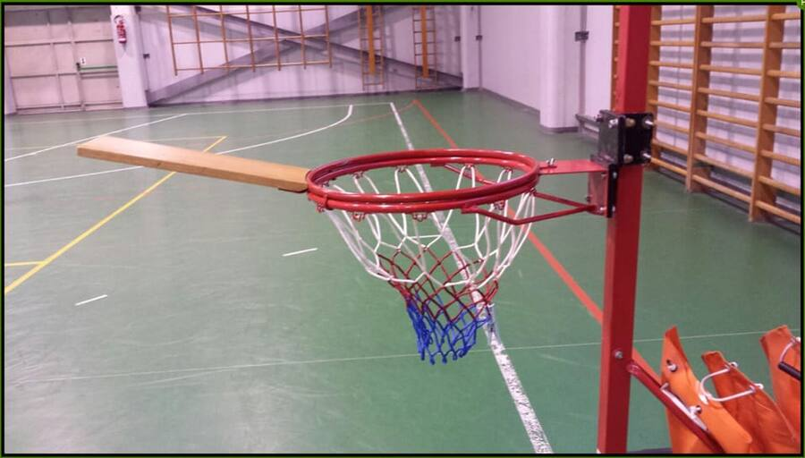
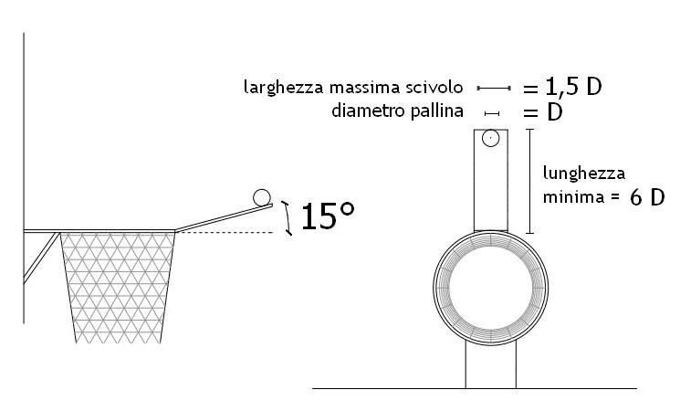
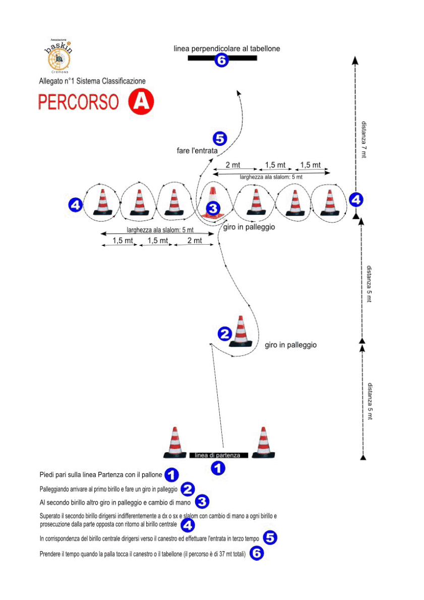
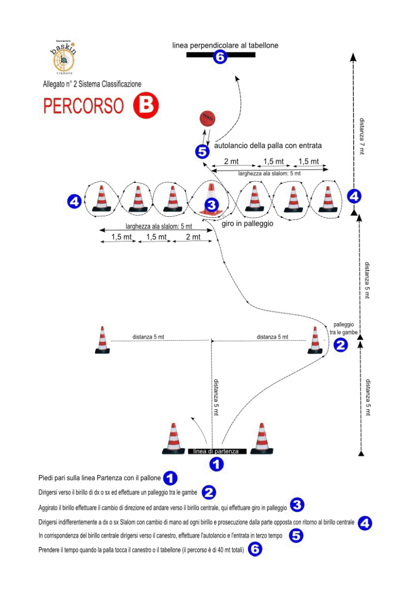
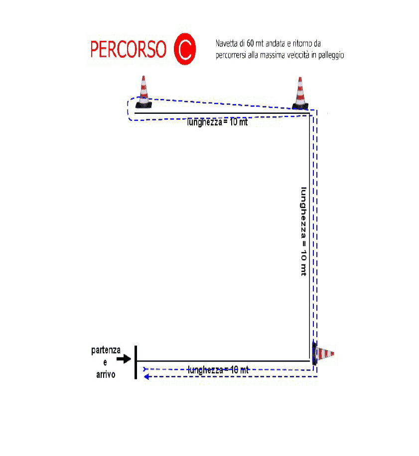

Allegato A al regolamento di gioco - La classificazione dei ruoli nel Baskin (rev. 1 settembre 2025)
Allegato A al regolamento di gioco
LA CLASSIFICAZIONE DEI RUOLI NEL BASKIN
Rev. 1 settembre 2025
PREMESSA
Il sistema di classificazione, vero ago della bilancia del BASKIN, è riferito fondamentalmente alla ricerca di un principio che consenta anche ad ogni persona con disabilità di disputare una gara senza distinzione e discriminazione relativa alle proprie limitazioni. Allo stesso tempo consente ad ogni giocatore (con o senza disabilità) di trovare una sua collocazione in base alle proprie competenze all’interno di una squadra di Baskin.
Tale sistema prevede l’identificazione e l’inclusione del giocatore in un ruolo mediante procedure che misurano il livello funzionale dei giocatori stessi, senza soffermarsi su ciò che un atleta non riesce a fare, valorizzando invece ciò che esso è in grado di fare.
Per convenzione il numero dei ruoli attualmente in uso nel Baskin è di CINQUE (con alcune suddivisioni interne), in ordine crescente di competenze espresse.
La squadra è schierata in campo con 6 giocatori e la somma totale dei punti-ruolo (di squadra) non deve superare il valore prestabilito di 23, e per la composizione di ogni squadra in campo, l’atleta di ruolo 1 porta un punto alla sua squadra il ruolo 2 porta 2 punti, il ruolo 3 porta 3 punti e così fino al ruolo 5
I cinque ruoli comprendono giocatori con e senza disabilità, maschi e femmine, e la formazione da schierare in campo deve tenere conto delle indicazioni presenti nel regolamento di gioco in vigore.
Attualmente i criteri e le procedure di classificazione sono il risultato di uno studio delle abilità su una serie di sperimentazioni sul campo, con test e osservazioni sul campo di gioco dando luogo ad una sintesi, la quale tiene conto delle reali capacità degli atleti dal punto di vista delle autonomie e delle grandi prassie necessarie per gli scopi del gioco (fare canestro), oltre che della capacità di interagire con gli altri giocatori in campo.
Sinteticamente, il compito dei classificatori è dunque quello di non limitarsi a prendere riferimento solo dalle impressioni, bensì a considerare le funzionalità esistenti e le risultanze ottenute basate sull’osservazione dell’atleta durante alcuni test e durante l’attività di gioco, tali da produrre criteri il più possibile oggettivi che permettano la definizione di ruoli omogenei.
D’altro canto, la suddivisione in ruoli ha proprio la funzione di consentire una competizione più equa e più leale sul piano sportivo, fornendo a tutti la possibilità di partecipare da protagonisti.
Il classificatore, quindi, valuterà quale è il vero potenziale d’azione del giocatore prendendo in considerazione la totalità dei tre aspetti predominanti che compongono un giocatore nella sua interezza e che possiamo così sintetizzare:
- Sfera Motoria: la capacità di compiere, coordinare e controllare un movimento, misurata attraverso le prassie espresse (es. cammino, corsa, utilizzo mani, etc.).
- Sfera Tecnica: la capacità di un giocatore di possedere ed esprimere i gesti tecnici tipici del Baskin (es. palleggio, gestione palla, tiro a canestro, etc.).
- Sfera Tattica: Quell’insieme di abilità attentive, analitiche e decisionali utilizzate per affrontare le situazioni che si incontrano durante una fase di gioco.
Questi aspetti vengono misurati attraverso due strumenti:
- Il Sistema di classificazione per il Baskin: misura la “sfera motoria” e la “sfera tecnica”
- La Griglia di valutazione delle abilità in partita: misura la “sfera tattica”
Questi due strumenti sono complementari tra di loro, in quanto il “Sistema di classificazione” si utilizza per primo fornendo al classificatore un’indicazione utile all’arruolamento di partenza, mentre la “griglia di valutazione della abilità in partita” serve a valutare durante la fase di gioco se il ruolo assegnato è corretto o se va modificato (quest’ultimo è riservato ai ruoli 3,4 e 5).
L’utilizzo di questi strumenti non si esaurisce con l’arruolamento iniziale, ma prosegue nel tempo attraverso una continua rivalutazione nel tempo.
È importante che l’osservatore sgomberi la mente da ogni pregiudizio e preconcetto iniziale sui giocatori da valutare, ricercando una valutazione il più oggettiva possibile.
Nel Baskin, la caratterizzazione di un ruolo prevede un “range” di valori che comprende un atleta più forte ai limiti superiori e uno più debole ai limiti inferiori del ruolo ma comunque “accettabili” sul piano dell’espressione tecnica, del confronto e per il gioco specifico. I giocatori apprendono, si allenano e migliorano le loro capacità, e per questo è importante che la valutazione degli atleti sia un processo continuo che non si fermi alla prima misurazione, ma che vada di pari passo con la crescita dei giocatori.
D’altro canto, uno degli obiettivi della filosofia del Baskin è quello di lavorare per riuscire a migliorare le abilità individuali raggiungendo una maggiore efficacia nell’interpretazione del ruolo assegnato, fino a raggiungere in certi casi l’accesso al ruolo superiore.
Questo tipo di classificazione inoltre dovrà fare in modo di manifestare chiaramente le diversità dei ruoli per renderli anche visibilmente evidenti a qualsiasi spettatore.
Nel baskin la classificazione dei ruoli ha il ruolo fondamentale di ricercare equità nella sfida che ogni giocatore deve affrontare, un constante equilibrio tra il riconoscimento delle fragilità e il mantenimento di una sfida equa e autentica. L’equità concessa dal regolamento viene mantenuta solo se i ruoli sono corretti. Una sfida troppo facile non è divertente oltre che dannosa per gli altri, mentre una sfida troppo difficile risulta ingiusta e limitante per chi la subisce.
Gli allenatori sono i primi osservatori che hanno il compito di definire i ruoli della propria squadra, risultando quindi il punto di partenza di tutta la classificazione dei ruoli e portando con sé un compito delicatissimo.
Esistono anche degli organi di supervisione che hanno il compito di vigilare sullo svolgimento delle competizioni EISI per assicurarsi che venga rispettato il corretto arruolamento degli atleti (Vedi Regolamento Italiano Commissioni Tecniche Baskin attualmente in vigore)
Il codice etico del Baskin in vigore contiene tutti i principi che devono guidare l’allenatore e ogni altro osservatore durante lo svolgimento delle loro funzioni.
Seguendo il principio per cui nel Baskin le regole si adattano per includere i giocatori, possono essere prodotti dalla CTN (Commissione Tecnica Nazionale dell’EISI ctn.baskin@eisi.it) dei verbali il cui contenuto è parte integrante dell’attuale sistema di classificazione. I verbali verranno inviati a tutte le CTL (Commissioni Tecniche Locali) e saranno disponibili sul sito ufficiale www.eisi.it, e verranno inseriti nella successiva revisione di questo documento.
SISTEMA DI CLASSIFICAZIONE PER IL BASKIN
I. / METODOLOGIA
Il metodo di indagine per classificare un giocatore deriva sia dalla passata che dalla recente ricerca fatta tramite una lunga e costante sperimentazione fatta sul campo.
Ogni ruolo possiede un preciso profilo funzionale strutturato su ciò che esso deve essere in grado di fare. L’osservazione delle capacità di un giocatore deve essere confrontata con i profili funzionali esistenti ricercando il ruolo corrispondente. Per i ruoli 3, 4 e 5 sono stati creati dei percorsi da utilizzare per definirne il ruolo di partenza valutando in modo oggettivo le capacità della “Sfera Motoria” e della “Sfera Tecnica. I percorsi sono inoltre utili per monitorare i progressi nel percorso di crescita di un giocatore.
II. / PROFILI FUNZIONALI DEI RUOLI
N.B.: Vedi NOTE AGGIUNTIVE ALLE ANALISI FUNZIONALI DEI RUOLI (pag.8) per casistiche dettagliate o non comparabili con i profili funzionali qui presenti.
1. Analisi funzionale Ruolo 1 e Ruolo 1S
Valutazione per osservazione Ruolo 1
- 1- giocatore con disabilità
- 2- non ha la stazione eretta, pertanto dovrà essere in carrozzina o allettato
- 3- possiede una forza inferiore a un livello minimo
→ il livello minimo è stabilito dalla capacità di far compiere un giro completo di ruota alla carrozzina manuale con sopra il proprio peso; quindi, il ruolo 1 non riesce a far compiere un giro completo alla ruota della sua carrozzina manuale.
NB: Dal punto di vista regolamentare, questo livello di forza autorizza l’uso di una palla di dimensioni e peso inferiori a quella di minibasket e la possibilità di tirare nel canestro basso.
L'atleta è RUOLO 1 se risponde a tutti e tre i criteri
Valutazione per osservazione Ruolo 1S
- 4 - Se l’atleta in Ruolo1 (per i 3 requisiti di cui sopra) non dovesse riuscire ad imprimere una traiettoria alla palla (* vedi: Precisazione sul concetto di “Traiettoria Parabolica” nel tiro del Ruolo 1 pag.8) per vari motivi, come l’eccessiva rigidezza delle articolazioni del polso e del braccio dovute alla sua spasticità (S), allora dovrà essere arruolato come Ruolo 1S e potrà essere aiutato nel tiro da un’attrezzatura specifica (uno Scivolo) secondo le disposizioni del Regolamento di gioco (* vedi: Attrezzatura di tiro Ruolo 1S pag. 8).
L'atleta è RUOLO 1S se risponde a tutti e quattro i criteri
2. Analisi funzionale Ruolo 2, 2T, 2P e 2R
Valutazione per osservazione: Ruolo 2
- 1- giocatore con disabilità
- 2- ha la possibilità di spostarsi autonomamente : o deambulando, o con l’utilizzo di una carrozzina manuale di cui riesce a far compiere un giro completo di ruota con sopra il proprio peso. Il giocatore non può e non deve essere assistito “fisicamente” durante lo spostamento, mentre è concessa l’assistenza verbale”.
- 3- non possiede la corsa/spostamento veloce : effettua il percorso C (percorso in palleggio anche se non continuato) in un tempo superiore a 40 secondi
L'atleta è RUOLO 2 se risponde a tutti e tre i criteri
Valutazione per osservazione: Ruolo 2T
- 4 Se l’atleta in Ruolo 2 (per i 3 requisiti di cui sopra) non si sposta autonomamente ma presenta uno spostamento parzialmente autonomo che non potrebbe essere portato a termine senza l’aiuto del tutor (sia che per cause motorie, es.: usa la carrozzina ma riesce a spingerla con una sola mano, oppure è NON vedente, etc., che per cause cognitive) allora dovrà essere arruolato come Ruolo 2T e conformarsi alle modalità di gioco indicate dal Regolamento.
Rientra nel profilo del Ruolo 2T anche chi riesce a spostarsi solo e soltanto tramite l’utilizzo di un deambulatore o ausilio similare
L'atleta è RUOLO 2T se risponde a tutti e quattro i criteri
TEST RAPIDO ruolo 2T: Eseguire il portaggio al ruolo 2, se esso non è in grado di recarsi autonomamente alla posizione di tiro per uno dei motivi sopradescritti neppure in seguito a stimoli verbali, ma riesce a farlo solo con assistenza “fisica” del tutor, allora rientra nella casistica del ruolo 2T.
Valutazione per osservazione: Ruolo 2P
- 5- Se l’atleta soddisfa i primi due criteri ma per limitazione agli arti superiori non è in grado di manipolare e tirare la palla da gioco regolamentare misura 5, allore dovrà essere arruolato come Ruolo 2P e conformarsi alle modalità di gioco precisate dal Regolamento.
L’impossibilità di manipolare e tirare la palla regolamentare deve essere assoluta ed evidente, e non deve esser confusa con la difficoltà, a prescindere che sia saltuaria o frequente.
L'atleta è RUOLO 2P se risponde ai criteri 1, 2 e 5
Valutazione per osservazione: Ruolo 2R
- 6- Se l’atleta soddisfa i primi due criteri ma non il terzo poiché possiede una leggera corsa/spostamento veloce (benché non ancora sfruttabile nella concitazione della partita) che gli permette di impiegare nel percorso C, effettuato in palleggio anche non continuato, meno di 40 secondi, o che gli permette di eseguire la sequenza di tiro dalla linea tratteggiata dei 3,70 metri in meno di 7 secondi, allora l’atleta deve essere arruolato come Ruolo 2R e conformarsi alle modalità di gioco precisate dal Regolamento.
L'atleta è RUOLO 2R se risponde ai criteri 1, 2 e 6
Essendo sufficientemente chiara all’osservazione la classificazione dei Ruoli 1 e 2, si sono individuate delle prove da campo (test di base) per stabilire l’appartenenza degli atleti ai Ruoli 3, 4 e 5.
Qualsiasi atleta in possesso della funzione motoria di corsa dovrà essere classificato Ruolo 3, o Ruolo 4, o Ruolo 5.
Esistono alcune casistiche in cui un atleta con disabilità in possesso della corsa può essere schierato come ruolo 2R, e sono:
- Atleti in possesso della corsa con disturbi dell’interazione tali da rendere impossibile la partecipazione come ruolo 3 nella concitazione della partita (es. disturbi dello spettro autistico, o importanti difficoltà cognitive, etc.)
- Atleti in possesso della corsa già precedentemente classificati come ruolo 3, che a causa di problemi di salute non ottengono l’idoneità all’attività sportiva agonistica prevista per tale ruolo.
Se un atleta in possesso della corsa non è in grado di sostenere i percorsi di classificazione per definirne il ruolo di partenza, non può essere arruolato
3. Analisi funzionale Ruolo 3
(GIOCATORE CON o SENZA DISABILITÀ CHE POSSIEDE LA CORSA)
La sua valutazione deriva dalle risultanze del test effettuato sul Percorso A (ed eventualmente anche nel Percorso C) come da allegato.
Si tratta di un giocatore che nel percorso A+C (vedi tabella allegata):
- 1- manifesta la corsa non fluida, impacciata, e/o scoordinata, e/o faticosa, lenta, pesante (condizione fondamentale)
- 2- ha poca padronanza del palleggio, che risulta spesso discontinuo ed eseguito con difficoltà
- 3- effettua in modo non corretto i giri e/o i cambi di mano (o non li effettua)
- 4- esegue l’entrata in terzo tempo in modo scoordinato e/o inesatto
4. Analisi funzionale Ruolo 4
(GIOCATORE CON o SENZA DISABILITÀ)
La sua valutazione deriva dalle risultanze del test effettuato sul Percorso A o B in allegato.
È un giocatore che ha superato il Percorso A+C e che potrebbe anche eventualmente affrontare il Percorso B (come da tabella allegata):
- 1- possiede le grandi prassie (cammino, corsa fluida);
- 2- possiede il palleggio in corsa regolare e continuato;
- 3- possiede fondamentali tecnici da principiante caratterizzati da un’esecuzione lenta;
- 4- possiede poca prestanza fisica nella motricità.
5. Analisi funzionale Ruolo 5
(GIOCATORE CON o SENZA DISABILITÀ)
La sua valutazione deriva dalle risultanze del test effettuato sul Percorso B (e per osservazione).
- giocatore con tutte le grandi prassie
- giocatore che possiede tutti i fondamentali della pallacanestro espressi con buona tecnica, totalizzando 14/15 punti nel Percorso B (come da tabella di valutazione allegata)
- giocatore che è dotato di velocità e/o prestanza fisica tale da contrastare gli altri ruoli 5, pur non avendo tecnica sopraffina
N.B: Per declinare ancora meglio i ruoli 4 e 5, insieme alle risultanze numeriche, si cercherà di fare una valutazione che incrocia tre fattori:
1) capacità tecniche, 2) prestanza fisica, 3) atleticità/dinamismo.
Quando almeno due sono presenti in modo significativo e la terza presente in modo sufficiente allora è numero 5, altrimenti è ruolo 4.
III. / NOTE AGGIUNTIVE ALLE ANALISI FUNZIONALI DEI RUOLI
1. Precisazione sul concetto di “Traiettoria Parabolica” nel tiro del Ruolo 1
La traiettoria parabolica che viene richiesta al tiro di un giocatore di ruolo 1 può essere anche solo il tratto discendente della parabola, non deve necessariamente comprendere l’ascesa, il passaggio dalla sommità e la discesa nel canestro.
La ragione per cui basta il tratto discendente è che comunque deve essere presente una componente di velocità orizzontale.
Quello che non si vuole è che la traiettoria sia verticale perché allora un giocatore potrebbe lasciare cadere dall’alto la palla nel canestro. Con una componente orizzontale della velocità nell’atto di tiro, la traiettoria non può che essere parabolica. Quindi quello che l’arbitro deve verificare è che il giocatore lasci la palla fuori dal cilindro che si innalza dal canestro e che ha il canestro stesso come base.
Se la palla entrerà è perché avrà compiuto una traiettoria parabolica, ovvero avrà avuto una componente orizzontale di velocità e non sarà stata fatta semplicemente cadere dall’alto.


(Nell'immagine a sinistra un esempio di traiettoria parabolica in cui in ogni punto è presente una componente di velocità orizzontale. Nell’immagine a destra un esempio di caduta verticale in cui non sono presenti componenti di velocità orizzontale)
2. Distanza di tiro equa del Ruolo 1
Per valutare un’equa distanza di tiro per il Ruolo 1 è necessario valutare il punto d’ingresso della palla nel canestro dividendo in modo immaginario il cerchio del canestro in due metà, una vicina al tiratore, e l’altra vicina alla base del canestro. Se la palla entra nella metà vicina alla base del canestro significa che il giocatore possiede la forza per tirare da più lontano e può essere arretrato. Se la palla entra nella metà canestro vicino al tiratore significa che il giocatore ha raggiunto, o quasi raggiunto, la massima distanza da cui riesce a fare canestro. Altro fattore da tenere in considerazione è la componente verticale della traiettoria parabolica di tiro, ovvero di quanto la palla passa sopra il ferro, se la palla passa di poco sopra significa che il giocatore ha raggiunto, o quasi raggiunto, il suo massimo.
3. Attrezzatura di tiro Ruolo 1S
Per la partecipazione di un giocatore di ruolo 1S, può essere aggiunto un piano inclinato con le seguenti caratteristiche:
- senza sponde laterali
- lungo almeno 6 volte il diametro della palla
- largo non più di 1,5 volte il diametro della palla
- deve terminare sul ferro e non oltre (vedasi immagini esemplificative allegate al verbale)
- l'angolo che si viene a creare tra l'anello del canestro e il piano inclinato non deve essere superiore ai 15° (vedasi immagini esemplificative allegate al verbale)
Il piano inclinato (con relativo supporto) può essere costruito sulle esigenze dell’atleta, purché rispetti le indicazioni presenti nel regolamento e qui definite con maggior chiarezza, e può essere strutturato in due modalità:
- Solidale al canestro posto ad altezza 1,10 mt (vedasi immagini esemplificative allegate al verbale)
- Scollegato dal canestro posto ad altezza 1,10 mt e posizionato su un supporto che viene successivamente avvicinato creando una continuità tra scivolo e anello del canestro. (Lo scivolo deve terminare sul ferro e non oltre)
Quello che non deve avvenire è che lo scivolo sia solidale alla carrozzina del ruolo 1S, ma devono essere due parti scollegate e autonome tra di loro.
Se le due parti fossero solidali tra loro verrebbe a mancare la fase di posizionamento del Pivot rispetto all'obiettivo da raggiungere (nel caso del Ruolo 1S lo scivolo su cui posizionare la pallina), caratteristica che deve essere presente in ogni tipologia di Pivot.
È consentito l'uso di una pedana per il rialzo dell'1S proporzionata alla sua necessità di arrivare a posizionare la palla sul piano inclinato.
Nel caso in cui il giocatore sia fissato alla pedana per ragioni di sicurezza, il piano inclinato non potrà essere solidale alla pedana e non potrà trovarsi già posizionato al momento del portaggio. Sarà compito del tutor, una volta eseguito il portaggio e prima di consegnare la palla per il tiro, posizionare il piano inclinato.
Il ruolo 1S deve appoggiare la pallina sul limite più alto del piano inclinato in modo che la distanza tra la proiezione della palla sul piano inclinato e il canestro non si riduca oltre le 4,5 volte il diametro della palla. Sarà compito delle squadre delimitare visivamente questo limite per facilitare il compito degli arbitri. Se l’appoggio avviene più avanti verso il canestro riducendo eccessivamente la lunghezza e ottenendo così un vantaggio non previsto, Il tiro dovrà essere invalidato.
Di seguito alcune specifiche sull’azione di tiro del ruolo 1S:
- Il Ruolo 1S può usufruire di eventuali supporti per le braccia solo se strettamente necessari, e a patto che tali supporti non eliminino la partecipazione attiva dell’atleta nel posizionamento della palla sullo scivolo. Se i supporti posizionano il braccio del ruolo 1S già sopra lo scivolo, e quest’ultimo deve solo aprire la mano per far cadere la palla, il tiro deve essere invalidato.
- Il tutor ha il compito di posizionare gli eventuali supporti utili al il tiro del'1S, ma la sua azione deve essere relativa al solo posizionamento dei supporti senza risultare in nessun modo parte attiva dell’azione di tiro, pena l’invalidazione del tiro.
- Al momento della consegna da parte del tutor, la palla non deve essere a contatto con il piano inclinato pena l'invalidazione del tiro. È parte dell’autonomia dell’azione di tiro dell’1S il posizionamento della palla sul piano inclinato.
- Una volta consegnata la palla il tutor non può più interferire attivamente con l'azione di tiro dell'1S che deve essere autonoma, pena l’invalidazione del tiro.
- Il tiro del ruolo 1S è da considerarsi iniziato quando la palla viene a contatto con il piano inclinato. Ne consegue che:
- Se la palla cade dalla mano dell’1S senza aver toccato lo scivolo viene considerato “tiro non iniziato” e il tutor può recuperare la palla e riconsegnarla al pivot per eseguire l'azione di tiro entro il tempo previsto.
- Se la palla cade dopo aver toccato lo scivolo viene considerato “tiro iniziato” e si conclude l'azione di tiro.
- Tutti gli errori da parte del tutor durante la consegna della palla devono sempre essere considerati indipendenti dalla volontà dell’1S e per questo equiparati a “tiro non iniziato”.
- Il conteggio del tempo di tiro comincia nel momento in cui la palla viene consegnata al ruolo 1S come da regolamento, e prosegue indipendentemente dalle casistiche sopradescritte.


(immagini esemplificative di una tipologia di piano inclinato per Ruolo 1S)
4. Ruolo 1 che non possiede la capacità di usare gli arti superiori per tirare a canestro in una delle modalità previste dal regolamento
Nei casi in cui un Ruolo 1 non possieda la capacità di tirare a canestro con gli arti superiori, esso dovrà essere classificato come ruolo 1S e viene concessa la possibilità, in via sperimentale, di utilizzare la testa o altre parti del corpo per colpire e indirizzare la palla nel canestro.
I criteri da rispettare sono i seguenti:
- a) L'atleta verrà classificato come ruolo 1S e seguirà le regole previste per tale ruolo.
- b) L'atleta potrà utilizzare la palla più consona alle proprie capacità, sempre rispettando il principio di ricercare la sfida più adeguata.
- c) Il piano inclinato dovrà rispettare le caratteristiche previste dal regolamento per il ruolo 1S (vedi “attrezzatura di tiro ruolo 1S”).
- d) L'atleta potrà tirare colpendo la palla direttamente con la testa oppure usare un oggetto collegato al viso/testa/altra parte del corpo (cannuccia, punteruolo legato alla fronte, ecc.)
- e) È possibile sperimentare sistemi di ancoraggio e lancio palla diversi da quelli indicati (es. Bocce paralimpiche, ecc.), a patto che vengano rispettati i punti precedenti.
- f) Al momento del tiro la palla dovrà essere appoggiata su un sostegno appositamente creato (anello di gomma, incavo nello scivolo, o altre soluzioni che permettano il tiro in sicurezza).
- g) Per ciò che non è stato qui specificato qui osservare le indicazioni presenti alla voce “Attrezzatura di tiro Ruolo 1S”.
Vista la natura sperimentale delle casistiche qui descritte, ogni soluzione ideata per essere conforme al gioco deve prima essere convalidata dalla Commissione Tecnica Nazionale (ctn.baskin@eisi.it).
Invitiamo inoltre i commissari a sperimentare, valutare e inviarci del materiale delle vostre casistiche.
5. Carrozzina Elettrica e Classificazione
L'utilizzo della carrozzina elettrica è attualmente previsto dal regolamento solo per il ruolo 1, in quanto il profilo di questo ruolo è quello di un atleta che possiede una forza inferiore a un livello minimo, dove per regolamento il livello minimo è stabilito dalla capacità di far compiere un giro completo di ruota alla carrozzina manuale con sopra il proprio peso.
Nel tempo sono emerse casistiche di giocatori che potrebbero possedere una forza pari o superiore al livello minimo, ma che per differenti motivazioni possono giocare a Baskin utilizzando soltanto la carrozzina elettrica. Ne consegue l'ovvio ragionamento che il semplice utilizzo di una carrozzina elettrica non è sempre sinonimo di possedere un livello di forza inferiore al livello minimo.
Si delibera che, se un atleta Pivot possiede e vuole utilizzare una carrozzina elettrica durante il gioco, esso deve ugualmente essere testato prima con la carrozzina manuale secondo il regolamento vigente per individuarne il ruolo, e solo successivamente, se vorrà, potrà utilizzare la carrozzina elettrica con il ruolo assegnatogli.
Le CT (Commissioni Tecniche) possono riservarsi il diritto di valutare un ruolo 1 in carrozzina elettrica come ruolo 2 o 2T nel momento in cui esso mostri una forza e una motricità tipica di questi ruoli (utilizzo della palla numero 5, distanza di tiro prossima alla linea dei 3 mt dalla base del canestro, capacità di eseguire i due palleggi, etc..).
6. Classificazione degli atleti con fragilità visive
Un giocatore NON VEDENTE corrisponde al profilo funzionale del ruolo 2T e come tale deve essere classificato, salvo che possieda i requisiti per essere classificato ruolo 1 o 1S seguendo la valutazione per osservazione dei profili funzionali dei ruoli presente nel sistema di classificazione
Un giocatore IPOVEDENTE, indipendentemente dall'entità della sua ipovisione, viene valutato con le stesse modalità di tutti gli altri atleti seguendo l'iter previsto dal regolamento con la possibilità di ricoprire tutti i ruoli esistenti dall'1S al 5.
Le eventuali influenze dell'ipovisione sulle capacità dell'atleta e sul grado di funzionalità emergono naturalmente durante l'esecuzione del test di classificazione e durante l'osservazione in partita.
Se un giocatore ipovedente in seguito all'iter valutativo risulta funzionalmente in grado di ricoprire il ruolo 3 ma per ragioni di sicurezza personale preferisce non ricoprire questo ruolo per l'intrinseco rischio di contatto fisico, esso può essere arruolato come ruolo 2R.
7. Influenza del rimbalzo nell’arruolamento del ruolo Pivot
Si specifica che l’abilità di andare a rimbalzo, con tutte le fasi che lo contraddistinguono, non è un criterio di classificazione del ruolo Pivot. Non possedere totalmente o parzialmente l’abilità di andare a rimbalzo non è una discriminante per essere classificati ruolo 2T piuttosto che Ruolo 2/2R.
8. Atleti con protesi articolari e Il ruolo della corsa nella classificazione
Gli eventuali interventi di innesto di protesi articolari (es. anca, ginocchio, caviglia, etc..) non prevedono di per sé l'incapacità o il divieto di spostamento o corsa, e ne consegue che non sono automaticamente indicatori di cosa un giocatore possa o non possa fare, o di quale ruolo possa o non possa ricoprire.
Tutte le informazioni di carattere medico-sanitario non interessano direttamente la classificazione ma devono essere confluire nella visita medico sportiva per l'ottenimento dell'idoneità agonistica, certificato che è tutt'ora l'unico documento medico-sanitario di nostro interesse per confermare la possibilità di giocare con il ruolo assegnato. Per tutti i giocatori, atleti con protesi articolari compresi, il sistema di classificazione attualmente vigente rimane l'unico strumento di nostro interesse per arruolare un giocatore che intende praticare il Baskin.
Specifiche generali sulla corsa:
- Si ribadisce, che la presenza di una corsa non sfruttabile in presenza di un'alta funzionalità del resto del corpo, sfera cognitiva compresa, non è di per sé indicatore assoluto di un giocatore ruolo pivot. Quei casi di giocatori che nonostante una corsa non sfruttabile possiedono ugualmente un alto livello funzionale che gli permette di sopperire a questa fragilità, devono essere invogliati, testati e allenati per poter ricoprire il ruolo 3 o superiore, puntando a una ricerca di una sfida proporzionata alle proprie capacità.
- Quando si parla di un giocatore che non è in grado di correre bisogna fare un distinguo importante in merito alla capacità di corsa: è fondamentale capire se un giocatore è impossibilitato a correre, ovvero pur volendo non è in nessun modo in grado riprodurre il gesto motorio della corsa, oppure se il giocatore è in grado di riprodurre il gesto della corsa, seppur non fluida, ma preferisce non farlo a causa di altri fattori secondari quali stanchezza, dolore, rischio di infortunio, usura di eventuale protesi articolari, etc..
Nel primo caso il giocatore non possiede la capacità di corsa, nel secondo caso la possiede ma preferisce non usarla. Questa distinzione è fondamentale perché può avere un importante impatto negativo ai fini della valutazione, in quanto una persona che cammina correttamente senza difficoltà e possiede la corsa ma preferisce non utilizzarla può alterare negativamente i risultati ottenuti nei percorsi del "sistema di classificazione per il Baskin" fornendo un'indicazione di arruolamento inferiore alla funzionalità reale del giocatore in questione.
A tal proposito si suggerisce, per quei giocatori che ottengono un basso punteggio ai percorsi ma possiedono un alto grado di funzionalità residua (cognitiva e/o tecnica) capace di sopperire a un'eventuale capacità di spostamento ridotta, che l'arruolamento iniziale venga assegnato tenendo conto della funzionalità mostrata durante il gioco in allenamento/amichevole e misurata attraverso la "griglia di valutazione delle abilità in partita", osservando obiettivamente ciò che il giocatore riesce a fare, senza fermarsi al pregiudizio iniziale di un ruolo basandosi solo sulle eventuali fragilità.
9. Atleti con ruolo 3,4 e 5 che non ottengono l'idoneità all'attività sportiva agonistica
Gli atleti in possesso della corsa già precedentemente classificati come ruolo 3, che a causa di problemi di salute non ottengono l’idoneità all’attività sportiva agonistica prevista per tale ruolo (Visita di tipo B), possono essere schierati come Ruolo 2R.
Gli atleti che presentano un profilo funzionale corrispondente al ruolo 4 o 5 che non ottengono l'idoneità all'attività sportiva agonistica prevista per tale ruolo (visita di tipo B) non possono essere arruolati con un altro ruolo differente.
Nel Baskin la classificazione dei ruoli si basa sulla funzionalità espressa dagli atleti, e i giocatori che possiedono la funzionalità motoria, tecnica e tattica corrispondente al ruolo 4 o 5 non possono essere arruolati diversamente in quanto verrebbe a mancare la corrispondenza tra la funzionalità posseduta dagli atleti e quella prevista dal ruolo ricoperto, con conseguente alterazione dell'equità della sfida prevista dal regolamento.
Se un atleta in possesso della corsa non è in grado di sostenere i percorsi di classificazione per definirne il ruolo di partenza, non può essere arruolato
10. Possibilità di schierare gli atleti in un ruolo differente da quello risultante dal sistema di classificazione vigente
In nessuna occasione può essere concesso a una società di schierare un proprio atleta in un ruolo inferiore a quello previsto dal sistema di classificazione vigente.
Alle società, durante le amichevoli e i trofei non connessi ai campionati locali EISI e fasi successive, è concessa la possibilità di schierare un proprio atleta in un ruolo superiore rispetto quello previsto dal sistema di classificazione vigente.
Tale opportunità viene permessa per concedere agli atleti al limite superiore del proprio ruolo delle occasioni per sperimentarsi nel ruolo più alto, facendo esperienza e rendendo così più fluido l'eventuale cambio di ruolo.
Questa possibilità viene concessa, in via sperimentale, anche per quei campionati di natura "promozionale", laddove siano presenti in una Sezione Territoriale. Con “campionati promozionali” si intendono quei campionati che esistono parallelamente ai campionati locali ma che diversamente da essi non mettono in palio il titolo di campione locale e l'accesso alle fasi successive delle competizioni EISI. I campionati promozionali, laddove presenti, esistono con lo scopo di aiutare le neonate società a fare esperienza prima di partecipare ai campionati locali EISI.
In questi campionati, la possibilità di sperimentare un atleta in un ruolo superiore viene concessa ad una società solamente dopo apposita richiesta alla CTL e conseguente approvazione. La richiesta va fatta ad ogni stagione per ogni atleta interessato, e le CTL hanno la facoltà di limitare tale sperimentazione anche a periodi più brevi.
Questa concessione non è applicabile in nessun modo ai campionati Locali EISI che mettono in palio il titolo di campione locale e l'accesso alle fasi successive EISI, neppure se una squadra partecipa con modalità "fuori classifica”.
11. Casistiche particolari omologate dalla CTN
la CTN (Commissione Tecnica Nazionale) ha la facoltà di omologare modalità sperimentali di tiro non attualmente previste dal regolamento. Tali modalità saranno descritte da appositi verbali consegnati alla società dell’atleta in questione, e dovranno essere sempre portati con sé e mostrati durante lo svolgimento delle competizioni EISI.
IV. RIASSUMENDO
| 1 - 1S | 2 – 2T – 2P - 2R | 3 | 4 | 5 |
|---|---|---|---|---|
= PIVOT 1 Oppure PIVOT 1S
|
= PIVOT 2 (pivot di movimento) Oppure PIVOT 2T se:
(dove T sta per Tutor che può aiutare l’atleta nello spostamento) Oppure PIVOT 2P se:
(dove P sta per cambio palla) Oppure PIVOT 2R se:
|
|
|
|
V. / SISTEMA ASSEGNAZIONE RUOLI 3, 4, 5
Con tabelle allegate
1. Introduzione
Il principio su cui si basa l’assegnazione consiste nell’attribuire ad ogni ruolo una soglia relativa al punteggio totalizzato effettuando il percorso in allegato. L’assegnazione del punteggio si ottiene sommando i valori ottenuti nella valutazione di varie voci, a seconda del percorso.
Nel Percorso A, che serve a distinguere i giocatori di Ruolo 3 e Ruolo 4, le voci sono queste cinque:
- Tempo impiegato a svolgere il percorso (che dà indicazione sulla categoria di velocità);
- Corsa;
- Palleggio;
- Percorso;
- Entrata in terzo tempo.
Nel Percorso B invece, che serve a distinguere i giocatori di Ruolo 4 e Ruolo 5, le voci sono solo tre:
- Tempo impiegato;
- Palleggio;
- Entrata con palla autolanciata,
Ma si procede allo stesso modo del Percorso A.
Nel Percorso C infine, che serve a verificare i casi di dubbio tra Ruolo 3 e Ruolo 4, l'unico criterio è:
- Tempo impiegato
I punteggi massimi di ogni voce sono indicati nelle tabelle. E al termine dell’esercizio, in base al tempo cronometrato e alle competenze dimostrate, verranno assegnati i punti corrispondenti.
→ Vedere i 2 riquadri illustrativi nella pagina seguente, e le tabelle numeriche di riferimento.
Nota metodologica: Ogni giocatore dovrà essere sottoposto a 3 prove e il punteggio verrà calcolato come espresso nelle tabelle allegate.
ATTENZIONE!!!!
L’obiettivo è sempre quello di far utilizzare tutte le abilità di un giocatore, non mascherarle o limitarle tenendolo in un ruolo inferiore alle sue capacità.
Quindi i valutatori dovranno attenersi strettamente alle caratteristiche dei ruoli come presentati nella prima tabella dal titolo “RIASSUMENDO”.
RUOLO 4 o 3?
Il Percorso A eseguito perfettamente e con tempo inferiore a 20 secondi permette il conseguimento del punteggio massimo di 20 punti.
La soglia definita che permette di assegnare il Ruolo 4 è 16 punti (quindi da 16 a 20 sono considerati chiaramente di Ruolo 4).
Punteggi inferiori a 16 (< 16) nel Percorso A non sono sufficienti ad attribuire il ruolo 3.
Infatti, coloro che totalizzeranno 14 o 15 punti dovranno essere verificati in base alla rapidità e velocità di corsa. Per questo verranno testati sul Percorso C (percorso di velocità).
Se tali atleti avranno un riscontro cronometrico inferiore a 20” (sempre tenendo conto delle due prove su tre) saranno comunque da considerarsi Ruolo 4.
Coloro che invece manifestano una corsa più lenta saranno considerati Ruolo 3.
RUOLO 5 o 4?
La decisione andrà presa effettuando il Percorso B.
In questo caso il punteggio massimo totalizzabile vale 15 e la soglia che definisce il ruolo 4 vale 13. Cioè, siamo in presenza di un ruolo 4 al limite.
Se il punteggio ottenuto nel percorso B è proprio 13 il giocatore dovrà essere monitorato (per esempio durante il campionato) e, attraverso test intermedi o finali, (che possono essere decisi anche dalle Commissioni Tecniche Locali o Nazionale) per constatare se ha raggiunto il ruolo 5 (vedi sempre tabella allegata).
Operativamente per ogni voce indicata si assegna il punteggio corrispondente.
2. Tabella di valutazione per verificare i RUOLI n. 3 e 4 nel PERCORSO A
Giocatore: Cognome e Nome — Risultati: 1^ prova, 2^ prova, 3^ prova
| CRITERIO 1 Tempo impiegato | CRITERIO 2 Corsa | CRITERIO 3 Palleggio | CRITERIO 4 Percorso | CRITERIO 5 Entrata in terzo tempo |
|---|---|---|---|---|
| Assegnare un punteggio | Assegnare un punteggio | Assegnare un punteggio in base alle situazioni A, B, C, D o in base alle combinazioni indicate | Assegnare un punteggio | Assegnare un punteggio |
| Fino a 20 sec punti 6 > 20 fino a 22 sec punti 5 > 20 fino a 24 sec punti 4 > 24 fino a 26 sec punti 3 > 26 fino a 28 sec punti 2 Oltre 28 sec punti 1 |
Fluida, coordinata e veloce punti 2 Non fluida e/o impacciata e/o faticosa e/o poco coordinata e/o lenta punti 1 |
Controllato, continuo e regolare (anche se non perfetto dal punto di vista tecnico-estetico) con giri corretti e cambi di mano punti 6 A) giri non corretti tecnicamente (es: non effettua cambio di mano) punti 5 B) palleggia sempre con la stessa mano o non con tutti cambi di mano punti 5 C) palleggio non continuato (interrotto 2 volte) punti 4 D) interrotto spesso (più di due volte interrotto) punti 3 A+B punti 4 A+C punti 3 A+D punti 2 B+C punti 3 B+D punti 2 |
Senza errori nel percorso (netto) punti 4 Errori fatti nel palleggio (colonna precedente) punti 3 Errori fatti sia nel palleggio e palla persa 1 o 2 volte punti 3 Errori fatti nel palleggio e con 1 o più birilli saltati punti 3 Errori fatti nel palleggio e con palla persa spesso e birilli saltati punti 2 |
Esatta o esatta ma scoordinata punti 2 Non esatta o non esatta e scoordinata punti 1 |
PERCORSO A
- Se in 1 delle tre prove l’atleta totalizza un punteggio di almeno 16 punti, sarà da considerarsi Ruolo 4.
- Se in 2 delle tre prove acquisisce un punteggio inferiore a 14 punti, sarà da considerarsi Ruolo 3.
- Se in tutte 3 le prove previste acquisisce un punteggio di 14/15 punti, dovrà essere sottoposto al percorso C (navetta andata e ritorno di 60 metri in palleggio) per meglio individuare il ruolo.
| CRITERIO 1 Tempo impiegato | CRITERIO 2 Corsa | CRITERIO 3 Palleggio | CRITERIO 4 Percorso | CRITERIO 5 Entrata in 3° tempo |
|---|---|---|---|---|
| fino a 20 sec. | Fluida e coordinata | Continuo e regolare con giri corretti e cambi di mano | Senza perdere la palla e senza saltare i birilli | Coordinata e senza commettere infrazioni |
| vale 6 punti | vale 2 punti | vale 6 punti | vale 4 punti | vale 2 punti |
| SI OTTIENE UN TOTALE DI 20 PUNTI. L'ATLETA SARÀ SICURAMENTE RUOLO 4. | ||||
| CRITERIO 1 Tempo impiegato | CRITERIO 2 Corsa | CRITERIO 3 Palleggio | CRITERIO 4 Percorso | CRITERIO 5 Entrata in 3° tempo |
|---|---|---|---|---|
| > 22 fino a 24 sec. | Non fluida, impacciata e scoordinata, o lenta e faticosa | Non continuato (interrotto 2 volte) con giri eseguiti in modo scorretto | Perdendo almeno una volta la palla | Non esatta e scoordinata |
| vale 4 punti | vale 1 punto | vale 3 punti (A+C) | vale 3 punti | vale 1 punto |
| SI OTTIENE UN TOTALE DI 12 PUNTI. L'ATLETA SARÀ SICURAMENTE RUOLO 3. | ||||
| CRITERIO 1 Tempo impiegato | CRITERIO 2 Corsa | CRITERIO 3 Palleggio | CRITERIO 4 Percorso | CRITERIO 5 Entrata in 3° tempo |
|---|---|---|---|---|
| > 20 fino a 2 sec. | Fluida, coordinata e veloce | Non con tutti cambi di mano, e con giri scorretti | Salta uno o più birilli | Non esatta |
| vale 5 punti | vale 2 punti | vale 4 punti (A+B) | vale 2 punti | vale 1 punto |
| SI OTTIENE UN TOTALE DI 14 PUNTI. OCCORRE FARE UNA VERIFICA CON IL PERCORSO C. | ||||
| PERCORSO C — Se impiega meno di 20” sarà da considerarsi da subito Ruolo 4. Se impiega più di 20” sarà da considerarsi ancora Ruolo 3 | ||||
IN SINTESI
| SE SI OTTIENE | in 1 prova su 3 | in 2 prove su 3 | in 3 prove su 3 | ALLORA (decisione conseguente) |
|---|---|---|---|---|
| almeno 16 punti | = Ruolo 4 | |||
| tra 14 e 15 punti | =??? → Percorso C | |||
| sotto 14 punti | = Ruolo 3 |
Una volta stabilita la divisione fra i Ruoli n. 3 e n. 4, si passa a verificare se i Ruoli 4 visti con molte competenze possono essere arruolati come n. 5, passando al Percorso B con la seguente tabella.
2. Tabella di valutazione per verificare i RUOLI n. 4/5 nel PERCORSO B
Giocatore: Cognome e Nome — Risultati: 1^ prova, 2^ prova, 3^ prova
| CRITERIO 1 Tempo impiegato con corsa fluida e coordinata | CRITERIO 2 Palleggio | CRITERIO 3 Entrata con palla autolanciata |
|---|---|---|
| Maschi: (fino 19 sec) 6 punti (>19 fino a 20) 5 punti (> 20 fino a 21) 4 punti (> 21 fino a 22) 3 punti (> 22 fino a 23) 2 punti (oltre i 23 sec) 1 punto Femmine (fino a 20 sec) 6 punti (> 20 fino a 21) 5 punti (> 21 fino a 22) 4 punti (> 22 fino a 23) 3 punti (> 23 fino a 24) 2 punti (oltre i 24 sec) 1 punto |
Controllato, continuo e regolare. Percorso corretto eseguito con ottima tecnica punti 6 A) Commette passi di partenza punti 5 B) Difficoltà nei cambi di direzione e/o con palla tra le gambe punti 5 C) Giri non corretti punti 5 D) Errori nei cambi di mano punti 5 Insieme di 2 difficoltà: punti 4 Insieme di 3 difficoltà: punti 3 Insieme di 4 difficoltà: punti 2 |
Coordinata e senza infrazioni punti 3 Scoordinata punti 2 Scoordinata e con infrazioni punti 1 |
PERCORSO B
Dato per scontato che il percorso eseguito con tutte le competenze necessarie vale tot di 15 punti, gli atleti che totalizzeranno 14/15 punti in tutte tre le prove sono da considerarsi di Ruolo 5.
Gli atleti che in due prove su tre rimangono al di sotto dei 14 punti, sono da considerarsi di Ruolo 4.
Tali atleti di Ruolo 4 che in due prove su tre totalizzano 13 punti (mentre la terza è superiore), dovranno essere monitorati (per esempio durante le partite) e, arrivati a 14/15 punti, dovranno passare al ruolo superiore.
In questo caso il tempo (la velocità) è una discriminante importante.
| CRITERIO 1 Tempo impiegato con corsa fluida e coordinata | CRITERIO 2 Palleggio | CRITERIO 3 Entrata con palla autolanciata |
|---|---|---|
| Fino a 19 sec | Controllato continuo e regolare Percorso corretto eseguito con ottima tecnica | Coordinata e senza infrazioni |
| vale 6 punti | vale 6 punti | vale 3 punti |
| SI OTTIENE UN TOTALE DI 15 PUNTI. L'ATLETA SARÀ SICURAMENTE RUOLO 5. Si tratta in sostanza di un atleta con ottima tecnica e velocità di esecuzione. | ||
| CRITERIO 1 Tempo impiegato con corsa fluida e coordinata | CRITERIO 2 Palleggio | CRITERIO 3 Entrata con palla autolanciata |
|---|---|---|
| > 20 fino a 21 sec | Commette passi di partenza e giri non corretti (2 difficoltà) | Scoordinata |
| vale 4 punti | vale 4 punti | vale 2 punti |
| SI OTTIENE UN TOTALE DI 10 PUNTI. L'ATLETA SARÀ SICURAMENTE RUOLO 4. | ||
| CRITERIO 1 Tempo impiegato con corsa fluida e coordinata | CRITERIO 2 Palleggio | CRITERIO 3 Entrata con palla autolanciata |
|---|---|---|
| > 19 fino a 20 sec | Con difficoltà nei cambi di direzione e/o con palla tra le gambe | Coordinata e senza infrazioni |
| vale 5 punti | vale 5 punti | vale 3 punti |
| SI OTTIENE UN TOTALE DI 13 PUNTI. L'ATLETA È UN RUOLO 4 DA MONITORARE. In questo caso, come i fondamentali tecnici (secondo e terzo criterio) risultano buoni e a punteggio pieno, la discriminante è il tempo (velocità di esecuzione). Quindi il soggetto è da monitorare sulla velocità in contesto reale valutando anche il comportamento in partita per capire se può o potrà diventare di ruolo 5. | ||
IN SINTESI
| SE SI OTTIENE | in 1 prova su 3 | in 2 prove su 3 | in 3 prove su 3 | ALLORA (decisione conseguente) |
|---|---|---|---|---|
| 14-15 punti | = Ruolo 5 | |||
| 14-15 punti | 13 punti o meno | =??? → da monitorare | ||
| 13 punti o meno | = Ruolo 4 |
I ruoli assegnati andranno successivamente valutati e monitorati tramite la “Griglia di valutazione delle abilità in partita” completando così la valutazione globale dell’atleta confermando o modificando il ruolo assegnatogli.
Obiettivo: consentire a tutte le squadre di avere, negli stessi ruoli, atleti con competenze e caratteristiche simili, affinché tutti possano esprimere le proprie potenzialità con equa e leale competizione.
VI. / ALLEGATI (I 3 PERCORSI: A, B, C)



GRIGLIA DI VALUTAZIONE DELLE ABILITA’ IN PARTITA
ISTRUZIONI PER L’USO
Scopo
La seguente griglia di valutazione delle abilità in partita è stata pensata per uniformare e migliorare la correttezza della classificazione dei ruoli, completando il "Sistema di classificazione per il Baskin” sostituendone la voce "valutazione in partita" cercando di oggettivarla il più possibile.
Ogni ruolo è caratterizzato da determinate abilità, che seppur espresse in maniera differente da giocatore a giocatore, aiutano a delimitarne i confini. Rimane sempre sottointeso che nel Baskin esiste una tale variabilità individuale da non permette classificazioni nette e nitide come in altri sport, ma è possibile e doveroso cercare di essere sempre più precisi e oggettivi, così da parlare tutti la stessa lingua evitando incomprensioni.
Con questo obiettivo si è pensato di tenere in considerazione non tanto l'efficacia e la performance sul campo (variabili dipendenti), ma le abilità personali espresse durante il gioco (variabili indipendenti), oggettivandole il più possibile.
Se il test di valutazione con i percorsi si occupa di valutare la “Sfera Motoria” e la “Sfera Tecnica” di un giocatore, questa griglia è stata pensata per valutarne la “Sfera Tattica”, ovvero quell’insieme di abilità attentive, analitiche e decisionali utilizzate per affrontare le situazioni che si incontrano durante una fase di gioco.
La chiave di lettura con cui leggere la griglia è quella della “funzionalità” ossia, tralasciando le caratteristiche fisiche e tecniche di un giocatore, andare a valutarne il funzionamento in campo, cioè la capacità di comprendere una situazione, elaborare una soluzione ed eseguirla. Più bassa è la funzionalità e più bassa sarà la capacità di trovare una soluzione ad un problema, più alta sarà la funzionalità e più alta sarà la capacità di trovare un’ottima soluzione fino ad arrivare a “creare gioco”. Con creare gioco si intende la capacità di trovare da una situazione di partenza una soluzione che crei un vantaggio per sé ma soprattutto per i propri compagni.
| RUOLO 3 | RUOLO 4 | RUOLO 5 |
|---|---|---|
| FUNZIONALITA’ LIMITATA O PARZIALE | FUNZIONALITA’ PARZIALE O QUASI TOTALE | FUNZIONALITA’ TOTALE |
| SCARSA o NULLA capacità di Creare gioco | BASSA o MEDIA capacità di Creare gioco | BUONA o ALTA capacità di Creare gioco |
Funzionamento
Sono state selezionate 5 abilità e per ognuna di esse sono stati identificati 5 livelli di "espressione" disposte in ordine crescente. Ad ogni livello viene assegnato un punteggio, idealmente corrispondente a:
- Ruolo 3 profilo basso
- Ruolo 3 profilo alto
- Ruolo 4 profilo basso
- Ruolo 4 profilo alto
- Ruolo 5
la somma dei cinque punteggi ottenuti genera un risultato che va confrontato con queste soglie indicative di appartenenza a ogni ruolo:
- da 5 a 10 punti = Ruolo3
- da 11 a 20 punti = Ruolo 4
- da 21 A 25 punti = Ruolo 5
MALUS
Esistono due coefficienti “Malus” che devono essere applicati al punteggio ottenuto nei seguenti casi:
-Punteggio da ruolo 3 o 4 (da 5 a 20 punti) con altezza inferiore a 155 cm
-Punteggio da ruolo 5 (da 21 a 25 punti) con protesi/menomazioni fisica agli arti inferiori
Questi coefficienti negativi hanno lo scopo di abbassare il punteggio precedentemente ottenuto per equilibrare una componente fisica non modificabile che influisce in modo svantaggioso nel confronto con i pari ruolo.
Tabella delle casistiche in forma estesa
Essendo la griglia di valutazione per sua natura funzionale e pratica uno strumento sintetico si è pensato di creare e allegare una tabella che descrivesse in maniera più dettagliata come ogni ruolo esprime le proprie abilità. Questa tabella non sostituisce la griglia di valutazione ma la chiarisce, può essere considerata una “forma estesa” delle cinque abilità presenti nella griglia per aiutare il valutatore a comprendere meglio le casistiche con cui queste abilità possono manifestarsi nei diversi ruoli durante una fase di gioco, comprendendo anche alcune osservazioni che per le suddette ragioni di sinteticità e oggettività non sono state inserite nella griglia.
Modalità di valutazione e tempistiche
La griglia è valutativa di un singolo giocatore, è valida per i ruoli 3, 4, e 5, e va compilato durante l'osservazione di una o più partite. L’ideale, se le tempistiche e l’organizzazione del campionato lo consentono, sarebbe osservare il giocatore in almeno due diverse occasioni con le valutazioni di almeno due differenti valutatori. In presenza di più valutazioni si procede alla media matematica di tali risultati.
La griglia è lo strumento utilizzato dai membri della Commissione Tecnica presente in ogni sezione territoriale per valutare la correttezza degli arruolamenti durante le partite, ma ciò non toglie che questo strumento può e deve essere usato anche dagli allenatori stessi per valutare se i propri giocatori sono stati arruolati correttamente e per monitorarne costantemente i miglioramenti.
Se le valutazioni su un giocatore producono un risultato differente dall’arruolamento attuale allora l’atleta DEVE cambiare ruolo. Sarà compito delle commissioni locali stabilire le tempistiche del passaggio, che possono essere immediate (anche durante lo svolgimento di una partita se l’arruolamento non corretto risulta talmente squilibrato da condizionare l’esito della partita stessa) oppure posticipate nel tempo laddove la commissione tecnica ritenga che l’atleta necessiti di un certo lasso di tempo per allenare e affinare alcune competenze del nuovo ruolo che al momento non possiede.
Casi Dubbi
Le commissioni tecniche locali presenti nelle sezioni territoriale hanno pieno potere decisionale sull’arruolamento dei giocatori della propria sezione.
Per tutti i casi in cui ci sia una difficoltà nel determinare il corretto arruolamento di un giocatore a causa di forti caratteristiche “borderline” tra due ruoli, forti discordanze tra le valutazioni effettuate, casi non previsti dal regolamento o ancora fattori esterni, le commissioni tecniche locali possono chiedere l’intervento e/o consultarsi con la Commissione Tecnica Nazionale per dirimere le questioni.
Questione Etica
Quando si utilizza questa griglia di valutazione bisogna tenere a mente un concetto fondamentale:
Sgomberare la mente da ogni giudizio e preconcetto iniziale sui giocatori da valutare.
Partendo dal presupposto che ogni allenatore, giocatore, dirigente, e ogni altra figura nel mondo del Baskin partecipi a questo sport con la massima buonafede possibile, le commissioni tecniche e gli strumenti da lei utilizzati rivestono un ruolo fondamentale nel mantenere un equilibrio oggettivo, cosa che non sempre riesce quando si tratta di valutare un proprio giocatore/conoscente/amico. Questo però non deve sollevare gli allenatori e le altre figure dal valutare costantemente la correttezza degli arruolamenti così da facilitare il compito delle commissioni e mantenere il Baskin in costante equilibrio.
GRIGLIA DI VALUTAZIONE DELLE ABILITA’ IN PARTITA
MALUS
LEGENDA:
TABELLA DELLE CASISTICHE IN FORMA ESTESA
RISULTATI GRIGLIA DI VALUTAZIONE DELLE ABILITA’ IN PARTITA
La scheda dei risultati (cognome e nome, data di nascita, Sezione Territoriale, squadra di appartenenza, ruolo attuale, livello di espressione delle cinque abilità, Malus H e Malus A.A.I.I., punteggio ottenuto dopo l’applicazione dei malus) è quella prodotta dall’app con il comando Stampa / PDF della griglia compilata.
| PUNTEGGIO FINALE | RUOLO |
|---|---|
| 10 o inferiore | 3 |
| Tra 11 e 20 | 4 |
| Superiore a 21 | 5 |
Il regolamento, i documenti di gara e gli altri documenti si trovano sul sito EISI nel menu Documenti https://eisi.it/eisi/documenti/ oppure in Area Download.